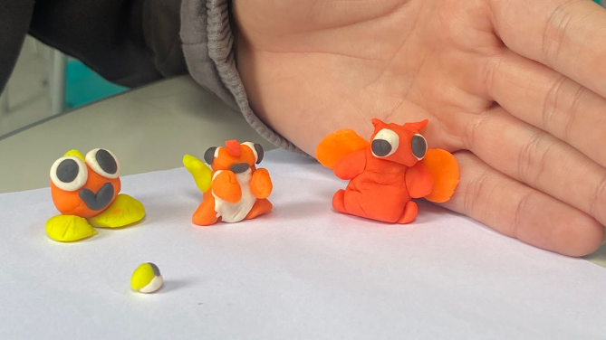

Sobre a atividade: Precisávamos formar grupos e, com massinha, criar uma família de seres vivos, representando características que mostrassem nosso entendimento da segunda lei de Mendel, aprendida em aula. Nosso grupo se inspirou nos monstrinhos de Pokémon para criar os personagens.
Critérios: C5 - H24 e 28
Sobre a atividade: Realizada em 16/10, com prazo de uma semana, a atividade teve como objetivo aprofundar o conteúdo de corrente contínua (CC) e corrente alternada (CA) aprendido em sala.
Sobre a atividade: Esta atividade começou em sala de aula no dia 16 de setembro, com o objetivo de transformar o conteúdo aprendido em um infográfico que incluísse as informações essenciais apontadas pelo professor. Realizada individualmente, a tarefa exigia a análise de um vídeo, indicado pelo próprio professor, sobre o processo de obtenção de alumínio a partir da bauxita, apresentado em forma de diagrama ou infográfico – a opção que escolhi. Além disso, tivemos que pesquisar sobre a reciclagem de alumínio no Brasil, incluindo dados sobre porcentagens de material reciclado, os produtos mais comumente reciclados e nossa opinião sobre o atual sistema de reciclagem: o que está funcionando e o que ainda pode ser melhorado.
Critérios: C5, C6, H24, H25, H26, H27, H28 e H29.
Sobre a atividade: A atividade tinha o objetivo de representar, de forma criativa, o último capítulo de um livro imaginário, explicando nosso conhecimento sobre síndromes cromossômicas, tema estudado em sala. Realizada em grupo de até quatro pessoas (como no nosso caso), dividimos as tarefas entre os integrantes e, no final, juntamos tudo no Canva com um design simples, só para ilustrar como seria esse capítulo em um livro didático.